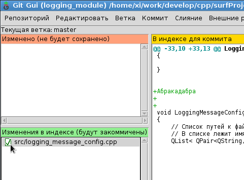
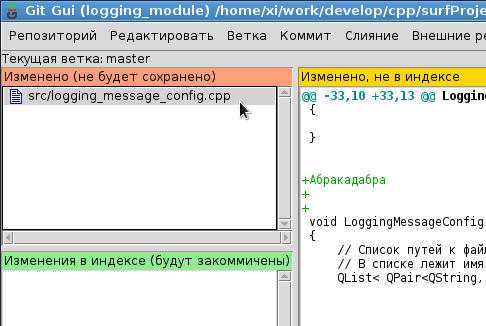
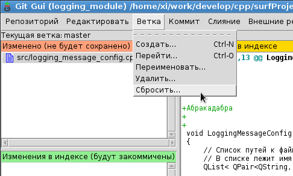
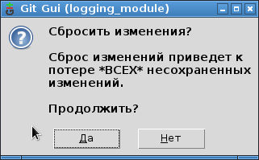

Если были сделаны изменения в каких-то файлах, но они еще небыли закоммичены, то их можно отменить следующим образом.
Можно запустить команду:
git gui
Данный GUI-интерфейс обычно поставляется под все операционные системы: Windows, Linux, MacOS, он всегда доступен для работы.
В открывшемся интерфейсе надо сделать так, чтобы все файлы были в области "Изменено", а область "Изменения в индексе" была пустой. Если в области "Изменения в индексе" есть файлы, то путем нажатия на иконку с галочкой (возле файла), файл будет перекинут в область "Изменено":

Должно стать так:

После этого можно в меню выбрать пункт "Ветка" - "Сбросить", и состояние всех файлов будет сброшено на состояние без изменений (то есть на момент, в котором файлы пребывали после последнего коммита):

Программа запросит подтверждения данного действия:

Если нажать "Да", то произойдет сброс состояния всех файлов. После сброса области "Изменено" и "Изменения в индексе" будут полностью пустыми.